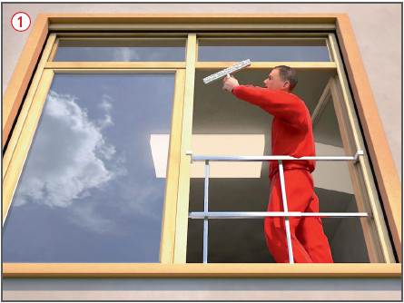
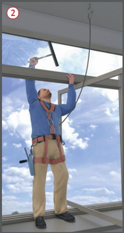
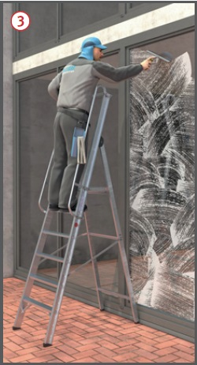
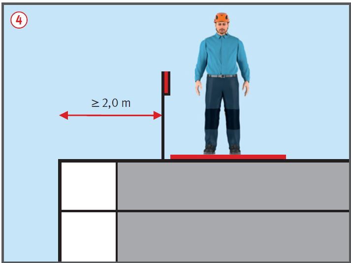
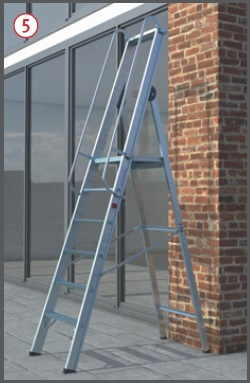

Glas- und Fassadenreinigung
|
|

Gefährdungen
- Bei Glas- und Fassadenreinigungsarbeiten besteht die Gefahr des Absturzes sowohl in das Gebäude hinein, als auch nach außen.
Schutzmaßnahmen
Fensterreinigung von innen
- Fensterbänke nur betreten, wenn sie tragfähig und mindestens 0,25 m breit sind.
- Bei einer Absturzhöhe von mehr als 1,0 m bzw. 2,0 m bei Baustellen sind Maßnahmen zur Absturzsicherung zu ergreifen, z. B. mobiles Schutzgeländer
 anbringen, wenn die Reinigung der Fensterflächen und -rahmen vom Boden aus nicht möglich ist oder wenn fest installierte Geländer oder Brüstungen fehlen, oder
anbringen, wenn die Reinigung der Fensterflächen und -rahmen vom Boden aus nicht möglich ist oder wenn fest installierte Geländer oder Brüstungen fehlen, oder
- persönliche Schutzausrüstung gegen Absturz verwenden, wenn Anschlagpunkte gemäß DIN EN 795 vorhanden sind
 und die entsprechenden Anforderungen für den Einsatz der persönlichen Schutzausrüstung erfüllt sind (z. B. praktische Einweisung, Rettungskonzept, etc.).
und die entsprechenden Anforderungen für den Einsatz der persönlichen Schutzausrüstung erfüllt sind (z. B. praktische Einweisung, Rettungskonzept, etc.).

Fenster- und Fassadenreinigung von außen
- Bei Standplätzen mit Absturzgefahr Hebebühnen oder Gerüste verwenden, wenn fest installierte Einrichtungen fehlen (z. B. Reinigungsbalkone, Fassadenbefahranlage). Einsatz von Leitern nur, wenn andere Arbeitsmittel nicht verhältnismäßig sind.
- Ist auf Reinigungsbalkonen der Aufstieg auf Leitern oder Tritte erforderlich, vorzugsweise leichte Plattformleitern einsetzen
 .
.
- Reinigungslaufstege müssen mind. 0,5 m breit sein. Öffnungen in Laufstegen max. 35 mm.

Zusätzliche Hinweise für die Reinigung von Glasdächern (bedingte Betretbarkeit)
- Glasdächer nur betreten, wenn
- Stoßsicherheit und Resttragfähigkeit durch Prüfung belegt ist, oder
- eine allgemeine bauaufsichtliche Zulassung vorliegt und keine Gegenstände > 4 kg mitgeführt werden (Ausnahme: wassergefüllter Kunststoffeimer mit max. 10 l).
- Absturzsicherungen anbringen an Öffnungen, Lichtkuppeln, Lichtbändern, wenn diese weniger als 0,5 m aus der Fläche herausragen.
- An der Dachaußenkante Absturzsicherungen anbringen bei einer Absturzhöhe von mehr als 1,0 m bzw. 2,0 m auf Baustellen oder
- bei Flachdächern < 22,5° Absperrungen in mind. 2,0 m Entfernung von der Absturzkante errichten
 .
.

Zusätzliche Hinweise für die Reinigung von geneigten Glasflächen
- Ab einer Neigung von mehr als 5° Einrichtungen vorsehen, die ein Abrutschen beim Betreten verhindern.
- Laufstege mit Trittleisten, wenn die Neigung mehr als 1 : 5 (ca. 11°) beträgt.
- Ist die Glasfläche steiler als 1 : 1,75 (ca. 30°), Laufstege mit Stufen verwenden.
Zusätzliche Hinweise für die Reinigung von nicht betretbaren Glasflächen
- Für Lichtplatten, Staubdecken und Verglasungen, die beim Betreten brechen können, besondere Arbeitsplätze und Verkehrswege (z. B. Laufstege) schaffen.
- Nutzbare Laufbreite mind. 0,5 m, nutzbares Lichtraumprofil mind. 0,5 x 2,0 m.
- Persönliche Schutzausrüstung gegen Absturz verwenden, wenn kein Geländer vorhanden ist.
Zusätzliche Hinweise für die Verwendung von Leitern
- Erstelllung einer Gefährdungsbeurteilung vor dem Einsatz von Leitern. Prüfung anhand einer Gefährdungsbeurteilung, ob andere Arbeitsmittel verhältnismäßiger sind.
- Der Beschäftigte muss mit beiden Füßen auf einer Stufe oder Plattform stehen. Die zulässige Verwendungsdauer beträgt für Beschäftigte bei einer Standhöhe > 2 m bis max. 5 m zwei Std./Arbeitsschicht.
- Muss auf einer Leiter eine Last getragen werden, darf dies ein sicheres Festhalten nicht verhindern.
- Nur Leitern verwenden, die nach ihrer Bauart für die auszuführenden Tätigkeiten geeignet sind.
- Leitern nur auf tragfähigem, unbeweglichen und ausreichend dimensioniertem Untergrund aufstellen, so dass sie sicher begehbar sind.
- Leitern zusätzlich gegen Umstürzen und Verrutschen sichern.
- Fahrbare Leitern sind vor ihrer Verwendung zu arretieren.
- Vorzugsweise leichte Plattformleitern verwenden, auf deren Plattform auch Eimer mit Reinigungsmittel abgestellt und Werkzeug abgelegt werden können
 .
.

Arbeitsmedizinische Vorsorge
- Arbeitsmedizinische Vorsorge nach Ergebnis der Gefährdungsbeurteilung veranlassen (Pflichtvorsorge) oder anbieten (Angebotsvorsorge). Hierzu Beratung durch den Betriebsarzt.
07/2021